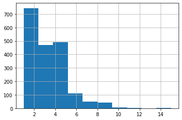
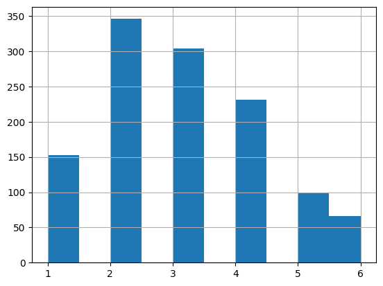
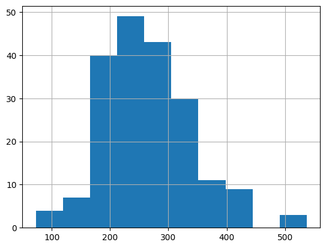

import os
import numpy as np
from singleline_stroke3.dataset import *
from singleline_stroke3.display import *
from singleline_stroke3.fileorg import *
from singleline_stroke3.strokes import *
from singleline_stroke3.svg import *
from singleline_stroke3.transforms import *analysis
Looking at outliers in terms of num_strokes, num_points.
Full Runs
Dataset V1
epsilon=1.0- No max stroke threshold
## first dataset
# full_dataset = svgs_to_deltas('../../svg-dataset/sketch_mgmt/imgs_sorted/drawings_svg_cropped/', '../outputs', limit=None)
# np.savez('../datasets/v1-splice.npz', full_dataset, encoding='latin1', allow_pickle=True)Dataset V2
epsilon=0.5max_stroke={5,6}
# ## second dataset
# %%time
# full_dataset_eps05 = svgs_to_deltas(
# "../../svg-dataset/sketch_mgmt/imgs_sorted/drawings_svg_cropped/",
# "../outputs_segmented",
# epsilon=0.5,
# limit=None,
# )
# print("-" * 50)
# print(len(full_dataset_eps05))
# print("-" * 50)
# np.savez(
# "../datasets/v2-splice-eps05-j15-s40.npz",
# full_dataset_eps05,
# encoding="latin1",
# allow_pickle=True,
# )Dataset V3
# full_dataset = svgs_to_deltas(
# singleline_data_home() / "svg/epoch-20231214/0_drawings",
# singleline_data_home() / "stroke3/epoch-20231214/0_drawings",
# epsilon=1.0,
# limit=None,
# )
# np.savez(
# singleline_data_home() / "stroke3/epoch-20231214//full-v2-eps10.npz",
# full_dataset,
# encoding="latin1",
# allow_pickle=True,
# )data_home = singleline_data_home(default="../data_home")
sample_path = data_home / "stroke3/epoch-20231214/sample-v2-eps10.npz"no env var SINGLELINE_DATA_HOME, defaulting to: NoneAnalysis: choosing max stroke threshold, to filter out drawings with too much complexity.
full_dataset = np.load(
sample_path,
encoding="latin1",
allow_pickle=True,
)["arr_0"]
len(full_dataset)
df = stroke_summary_df(full_dataset)
df.head()| idx | num_points | num_strokes | |
|---|---|---|---|
| 0 | 0 | 246 | 5 |
| 1 | 1 | 172 | 4 |
| 2 | 2 | 306 | 4 |
| 3 | 3 | 213 | 3 |
| 4 | 4 | 35 | 4 |
df.num_strokes.hist()<Axes: >
TODO: - map order of TSV/DF to order of dataset (or of full dataset file)
plot_strokes(deltas_to_strokes(full_dataset[0]))s0 = deltas_to_strokes(full_dataset[0])Chop Dataset into Train/Val
# d6 = df[df.num_strokes <= 6].sample(frac=1)
# train_size = int(len(d6) * 0.8 / 100) * 100
# val_size = len(d6) - train_size
# print(train_size, val_size, len(d6))
# d6_train = full_dataset[list(d6[:train_size].idx)]
# d6_val = full_dataset[list(d6[train_size:].idx)]
# print(len(d6_train), len(d6_val))
# np.savez(
# "v2-splice-maxstrokes6.npz",
# train=d6_train,
# valid=d6_val,
# test=d6_val,
# encoding="latin1",
# allow_pickle=True,
# )1200 347 1547
1200 347(1200, 347)# import pandas as pd
# d6_summary = [
# {"idx": i, "num_points": len(deltas), "num_strokes": len(deltas_to_strokes(deltas))}
# for i, deltas in enumerate(d6_train)
# ]
# d6df = pd.DataFrame(d6_summary)
# d6df.num_strokes.hist()<Axes: >
# d5 = df[df.num_strokes <= 5].sample(frac=1)
# train_size = int(len(d5) * 0.8 / 100) * 100
# val_size = len(d5) - train_size
# print(train_size, val_size, len(d5))
# d5_train = full_dataset[list(d5[:1200].idx)]
# d5_val = full_dataset[list(d5[1200:].idx)]
# print(len(d5_train), len(d5_val))
# np.savez(
# "v2-splice-maxstrokes5.npz",
# train=d5_train,
# valid=d5_val,
# test=d5_val,
# encoding="latin1",
# allow_pickle=True,
# )1100 362 1462
1200 262Inspect edge cases
# df[df.num_strokes <= 2].num_points.hist()<Axes: >
# df[df.num_strokes <= 2].iloc[:5]| idx | num_points | num_strokes | |
|---|---|---|---|
| 1455 | 0 | 177 | 2 |
| 1456 | 5 | 252 | 2 |
| 1457 | 12 | 236 | 2 |
| 1458 | 28 | 387 | 2 |
| 1459 | 35 | 303 | 2 |
# df[df.num_strokes <= 2].iloc[:5]# tmp1 = [s for s in deltas_to_strokes(tmp) if len(s) > 0]
# strokes_to_deltas(rdp_strokes(tmp1, epsilon=1.1)).shape# plot_strokes(rdp_strokes(tmp1, epsilon=1.1))# import numpy as np
# max_seq_len = 20
# overflow = len(tmp) - max_seq_len
# rand_offset = int(np.random.rand() * overflow)
# overflow, rand_offset
# rand_offset = 0
# plot_strokes(deltas_to_strokes(tmp[rand_offset : rand_offset + max_seq_len]))# df[df.num_strokes < 5].sample(frac=1).num_strokes.hist()# len(df[df.num_strokes == 6])# for i in range(5):
# row = df[df.num_strokes == 6].iloc[i]
# print(row)
# plot_strokes(deltas_to_strokes(full_dataset[row.idx]))# for entry in by_num_strokes[10:20]:
# idx, num_points, num_strokes = entry
# plot_strokes(deltas_to_strokes(full_dataset[idx]))Find shortest strokes
# len(df[df.num_strokes == 4])# for idx in range(len(df[df.num_strokes <= 4])):
# print(idx)